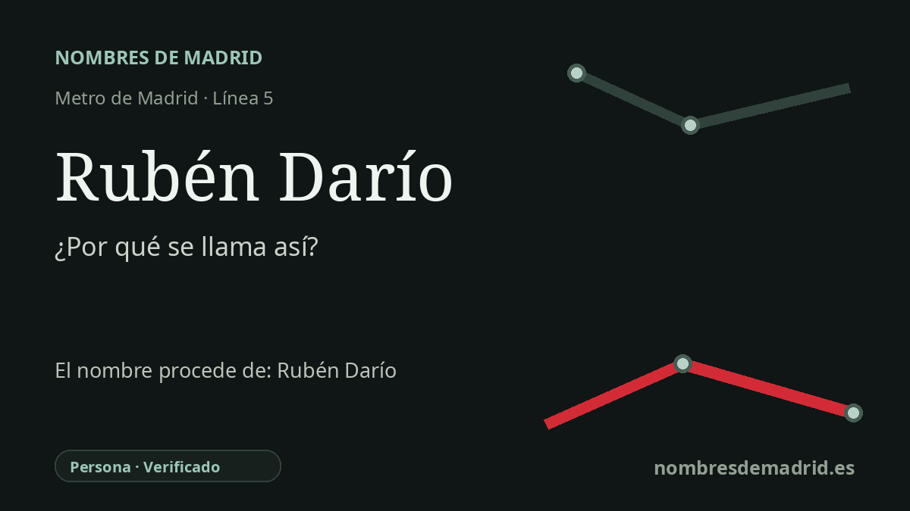

Publicado el · Investigación de Nombres de Madrid · Cómo verificamos cada origen · 8 fuentes consultadas
Respuesta rápida
La estación de Rubén Darío toma su nombre de la cercana Glorieta de Rubén Darío, dedicada al poeta, periodista y diplomático nicaragüense Félix Rubén García Sarmiento. Darío fue la figura principal del Modernismo en lengua española y mantuvo una relación importante con Madrid por sus viajes literarios, su labor periodística y su actividad diplomática.
La historia del nombre
La estación de Rubén Darío se entiende mejor como un nombre de Metro tomado de la ciudad que la rodea. Sus accesos se abren hacia la Glorieta de Rubén Darío y el entorno del Paseo de la Castellana, y la ficha oficial del CRTM sitúa entradas en la propia glorieta. Por tanto, el nombre del transporte conserva una denominación urbana anterior, no una dedicatoria creada desde cero en 1970.
La persona que está detrás del nombre fue Félix Rubén García Sarmiento, conocido literariamente como Rubén Darío. Nació en Metapa, Nicaragua, en 1867 y murió en León, Nicaragua, en 1916. Fue poeta, periodista y diplomático. El Instituto Cervantes lo presenta como el máximo representante del Modernismo literario en lengua española, un movimiento que renovó el ritmo, las imágenes y la ambición cosmopolita de la poesía escrita en español.
Madrid tuvo un papel importante en su vida. En 1892 viajó a Europa y, en Madrid, formó parte de la delegación diplomática nicaragüense en los actos conmemorativos del Descubrimiento de América. Más tarde, su obra y su periodismo lo devolvieron a los círculos literarios españoles: la biografía del Cervantes lo relaciona con jóvenes admiradores como Juan Ramón Jiménez, Valle-Inclán y, en París, Antonio Machado, y recuerda que *Cantos de vida y esperanza* apareció en España en 1905. Entre 1907 y 1909 fue además ministro residente de Nicaragua en Madrid.
El topónimo urbano es casi medio siglo anterior a la estación. El callejero oficial de Madrid registra la Glorieta de Rubén Darío como vía vigente con fecha de alta de 7 de octubre de 1921, mientras una noticia de 1921 indica que el Ayuntamiento había aprobado sustituir el nombre de Glorieta del Cisne por el de Rubén Darío. La estación, abierta con el tramo Callao-Ventas de la línea 5 en 1970, heredó ese nombre ya asentado.
La documentación respalda con fuerza la dedicatoria, pero conviene matizar el relato. Es correcto presentar a Darío como figura central o máxima del Modernismo; afirmar que lo fundó él solo simplifica en exceso un movimiento literario más amplio. También es más preciso decir que la estación recibe el nombre a través de la plaza madrileña, que homenajea a Darío, y no que Metro eligiera de forma independiente el nombre del poeta.